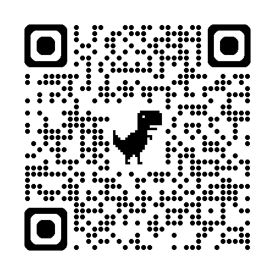

TRUE TEAMWORK
Building Human-AI Partnerships
for Tomorrow’s Cyber Challenges
![]()
GET YOUR STUFF NOW!

also there!
Download Materials Right Now!
ryanstraight.com/research/nicek12‑2025
You get:
- 12 lesson plans (3 activities × 4 grade bands)
- Assessment rubrics & career connections
- Low-resource implementation guides
- Ready-to-print materials
THE REALITY
The Pedagogical Gap
You know the SOC reality. Your students don’t—yet.
The challenge isn’t explaining that humans and AI collaborate.
It’s designing experiences where students discover it themselves.
The shift we’re engineering:
Humans using tools → Humans and AI as teammates
The Design Problem
Three things students need to discover:
- What AI genuinely contributes (not magic, not nothing)
- What humans uniquely contribute (not just “oversight”)
- How the partnership produces better outcomes than either alone
These activities scaffold that discovery.
ACTIVITY 1
Security Detective Teams
12 minutes | Grades 6-8 (adaptable K-12)
The design: Students investigate a security incident WITH an AI partner
The discovery moment: When students realize AI spotted something they missed—AND they spotted something AI missed—the partnership insight lands.
Implementation Options
Designed for your actual constraints—all activities work WITHOUT 1:1 devices:
Teacher as AI Voice ⭐ Often strongest
You voice AI responses—control pacing, surface limitations intentionally
Pre-Generated Cards
Print response cards—same discovery, no tech dependency
Rotation Stations
One device, groups rotate (5-min turns)
Think-Aloud Demo
Project one conversation, whole class analyzes
Let’s Try It Together!
If you DO have live AI access, here’s what it looks like:
Incident: User “jmiller” account compromised
Evidence:
- Password:
Summer2024! - Phishing emails in inbox
- AI says “medium strength”
- Logins during work hours
Your task:
What REALLY happened here?
(30 seconds—think or discuss with a neighbor)
The Designed Discovery
AI catches:
- “Summer2024!” = predictable pattern
- Seasonal + year structure
- Matches compromised password databases
Students catch:
- Phishing emails + compromise = connected
- Work hours timing matters
- Social engineering context
The insight: Neither alone gets the full picture. Students experience this—they don’t just hear it.
Built-In Verification Protocol
Scaffolded into the activity:
- How would I verify this finding?
- What other sources should I check?
- What’s the cost if AI is wrong here?
Why we built this in:
Students naturally over-trust or under-trust AI. The verification step calibrates appropriate skepticism—without dismissiveness.
In Your Classroom
Activity flow (35 min):
- Evidence (5 min) — Present scenario
- AI partner (10 min) — Pattern analysis
- Human context (10 min) — What AI misses
- Synthesis (10 min) — Combine insights
The download includes:
- Full lesson plan
- Evidence packets (print-ready)
- AI prompts for students
- All grade bands: K-2, 3-5, 6-8, 9-12
ACTIVITY 2
Ethics in Automated Security
12 minutes | Grades 6-8 (adaptable K-12)
The design: Students design governance policies for AI security systems
The discovery moment: When they hear AI articulate its own limitations, policy design becomes collaborative—not just restrictive.
The Setup
Scenario: Your school is getting “SchoolGuard”
It can:
- See what websites students visit
- Block “dangerous” sites
- Alert teachers about “unusual” activity
- Learn from student behavior patterns
Your job:
Decide what SchoolGuard should do automatically vs. ask humans first
Quick Vote: Policy Decision 1
Should SchoolGuard automatically block sites it thinks are malicious?
Option A: Yes, block automatically (faster protection)
Option B: No, require human approval (fewer mistakes)
Option C: Auto-block known threats, ask about uncertain ones
Quick Vote: Policy Decision 2
Should SchoolGuard alert teachers about “unusual” student activity?
Option A: Yes, alert immediately (safety first)
Option B: No, too much surveillance
Option C: Only alert for serious safety concerns
What Does the AI Say?
What I CAN do:
“I spot patterns humans miss. I’ve identified students at risk of self-harm weeks before any visible signs.”
What I CAN’T do:
“I flagged a student researching gun violence for a history paper. I see patterns, not intentions.”
In Your Classroom
Activity flow (40 min):
- Scenario (5 min) — Intro SchoolGuard
- Policy design (15 min) — 3 decisions
- AI perspective (5 min) — Capabilities & limits
- Debate (10 min) — Defend choices
- Reflection (5 min) — What’s hard?
Grade-band versions:
- K-2: “Robot Helper Rules”
- 3-5: “Computer Rules Committee”
- 9-12: “AI Governance Workshop”
All include scenario cards + AI voice scripts
ACTIVITY 3
What About Activity 3?
AI-Assisted Incident Response is in your download!
- NICE Framework Work Roles
- Realistic incidents (ransomware, breaches)
- AI recommends, humans decide
- Connects to cybersecurity careers
Why only 2 demos today?
We went deep so you could really try them
All 3 are complete in your materials—same quality, all grade bands
WHAT YOU’RE GETTING
Your Complete Download Package
📚 12 Complete Lesson Plans
- 3 activities × 4 grade bands (K-2 through 9-12)
- Full facilitation guides
- Differentiation strategies
📊 Assessment & Career
- Human-AI Collaboration rubrics
- NICE Framework Alignment Matrix
- Career connection handouts
- Work role mappings
🔧 Implementation Support
- AI Platform Setup guides
- Low-Resource Implementation (no AI? no problem)
- CTE program alignment
- Outreach/STEAM integration
📝 Ready-to-Print Materials
- Evidence packets & worksheets
- Role cards & scenario cards
- AI response cards (low-resource)
- Annotated bibliography
NICE Framework Alignment
Mapped to Work Roles—downloadable crosswalks included:
| Activity | Primary Work Roles |
|---|---|
| Security Detective Teams | Cyber Defense Analyst (PR-CDA), Vulnerability Assessment (PR-VAM) |
| Ethics in Automated Security | Cyber Policy Planner (OV-SPP), Privacy Officer, Security Manager |
| AI-Assisted Incident Response | Incident Responder (PR-CIR), SOC Analyst, Threat Intelligence |
Implementation note: Career connection handouts link activity tasks to specific KSAs. Full competency mapping available in download—ready for CTE pathway and curriculum approval documentation.
Implementation Considerations
As you plan adaptation…
- What’s your current AI access reality? (Low-resource options are robust)
- Which discovery moments matter most for your students?
- How do these connect to existing curriculum?
- What adaptations are you already considering?
QUESTIONS?
Get the Materials!
ryanstraight.com/research/nicek12-2025
12 lesson plans • Career connections • Any resource level
Presented by: Ryan Straight, Rob Honomichl, & Paul Wagner
Cyber Operations
College of Information Science
University of Arizona
Straight, Honomichl, & Wagner - “True Teamwork” - NICE K12 2025